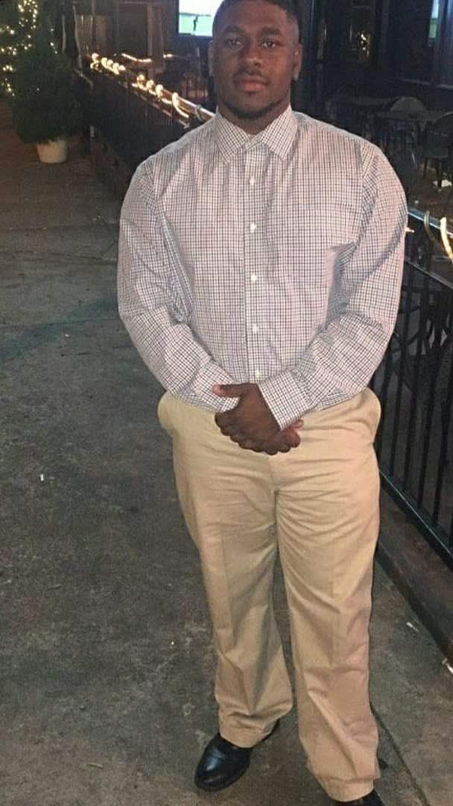

 alt ="Profile picture"
Hi! I'm Darius Jones
I am a new web developer from Austin, Texas.
As a former college graduate I have found a strong passion and interest in:
- The anatomy of websites and web design.
- Learning how codes build and alter websites.
- Meeting other passionate web designers.
About Darius
After graduating college, I started to pursue my career in business management. While pursuing my passion in business management, I found a love in unerstanding the anatomy of websites and how to create and alter them to my liking or others prefrences. I couldn't be more happier to be a part of this program. I cant wait to see what the future holds for me and the Thinkful program.